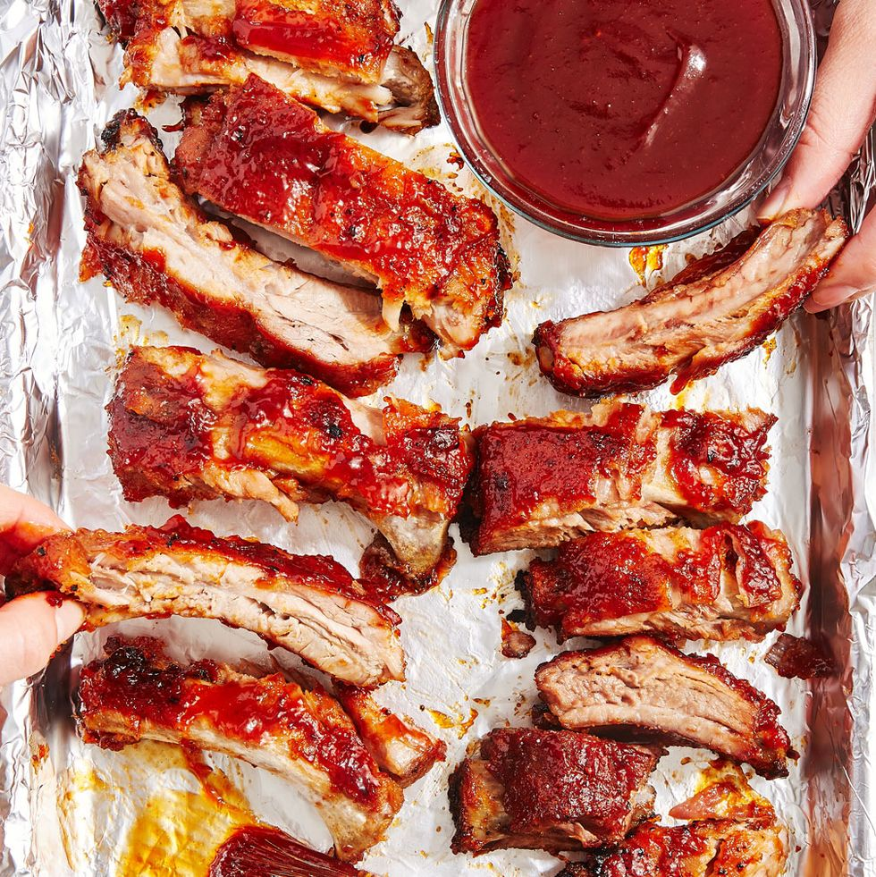

Ribs

Oven-Baked Ribs
You're craving ribs, but don't have access to a grill.
Heartbreaking, we know, but that's where these BBQ
oven-baked ribs come in. Now, you can make tender,
fall-of-the-bone ribs in the comfort of your own
kitchen, no matter the time of year or your living
situation. Sweet, salty AND savory, these ribs are
perfect to serve up for any game day celebration or
weeknight dinner. Tip: The last thing you'll want to
do is run out before everyone gets their fair share,
so make sure you have at least 4-5 ribs per adult,
which is about 2-3 servings per rack.
Ingredients
- 2 lb. baby back ribs
- 1/2 c. packed brown sugar
- 2 tsp. kosher salt
- 1 tbsp. garlic powder
- 1/2 tsp. freshly ground black pepper
- 1/2 tsp. paprika
- 1/2 tsp. ground mustard
- 1/4 tsp. cayenne
Steps
- Preheat oven to 300° and line a baking sheet with aluminum foil.
If your ribs have a thin membrane over the bones on the backside,
remove by carefully sliding a knife under membrane and then peel
it away.
- In a small bowl stir together brown sugar, salt, garlic powder,
pepper, paprika, mustard powder, and cayenne. Rub mixture all
over ribs and place on prepared baking sheet. Cover with foil
and bake until very tender, 2 hours.
- Meanwhile make barbecue sauce: In a medium saucepan over medium
heat, combine all sauce ingredients together. Bring to a boil,
then reduce heat and let simmer, stirring occasionally, until
thickened, 1 hour.
- Turn oven to broil. Remove foil from ribs and brush both sides
with barbecue sauce. Broil until sauce just starts to caramelize,
2 to 4 minutes.